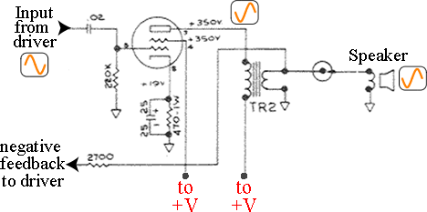

Figure 8-1 shows the last section of our circuit, the power amplifier. This tube and sub-circuit create the power to drive the speaker. Once again we have a common cathode circuit that is very close to typical.
What’s the same as a Typical common cathode amplifier?
- $470\Omega$ resistor connected to cathode at one end.
- Purpose = set $0V$ at grid halfway between saturation and cutoff.
- $2µF$ capacitor connected in parallel with the $1500\Omega$ resistor.
- Purpose = provide low reactance path for $AC$ so that cathode voltage remains stable.
What’s different?
- No resistor from anode to $V+$
- The purpose of that resistor was to convert changing current into changing voltage for the next tube. In this case the tube is feeding a transformer instead of a tube. Since the transformer works based on current, no conversion to changing voltage is needed.
- $220k\Omega$ resistor connected from control grid to ground
- This resistor is typically called a grid leak resistor.
- Purposes =
- Provide load for previous tube stage.
- Create high pass filter with $0.02µF$ cap
- Provide ground reference for control grid.
Wrap-up
By first identifying the sub-circuits that we already knew we were able to understand this circuit without too much effort. A method for circuit analysis will be presented later in the text in more detail. Most guitar amplifiers available are either based on this design or an extension of it, so feel free to find schematics and work to understand them.